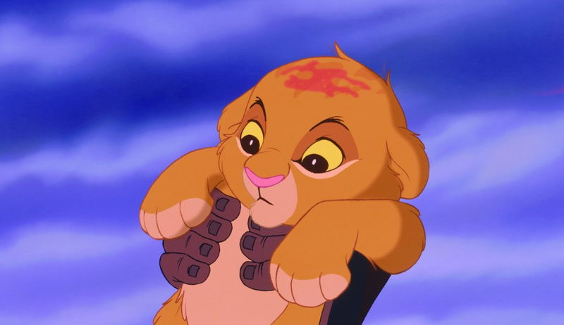

Симба (англ. Simba; в переводе с суахили — «лев») — главный герой культового диснеевского мультфильма «Король Лев», выпущенного студией Уолта Диснея в 1994 году. В фильме Симбу озвучивали актёры: Джонатан Тейлор Томас (маленького) и Мэттью Бродерик (взрослого); вокальные номера персонажа исполняли: Джейсон Уивер (маленький Симба) и Джозеф Уильямс (взрослый Симба). Помимо оригинального мультфильма, образ Симбы появляется и во множестве других официальных и фанатских произведениях вселенной «Короля Льва».
Содержание
1 Создание

1.1 Концепция и прообразы
2 Описание
3 Роль в мультфильме
4 Другие появления
4.1 Фильмы и ТВ
4.2 Книжная продукция
4.3 Видеоигры
5 Литература
6 Примечания
7 Ссылки
Создание
Концепция и прообразы
Идея создать «Короля Льва» появилась у генерального директора (CEO) Disney Джеффри Катценберга в 1989 году[3], и фильм изначально задумывался под названием «Король джунглей» и «Король Калахари».
Описание
Симба — сын Короля-льва Муфасы и королевы Сараби, племянник Шрама. В детстве был неугомонным и любопытным львёнком, из-за чего часто попадал в неприятности. После внезапной смерти отца (в которой винит себя) львёнок был вынужден покинуть родное королевство. За пределами родины львёнка приютили и воспитали сурикат Тимон и бородавочник Пумба, и бок о бок с ними беглый юный принц живёт беззаботную и лёгкую жизнь. Став взрослым, Симба встречается с духом погибшего отца, убедившего его в истинном предназначении. Прозревшему и разобравшемуся в себе принцу предстояло вернуться и спасти Земли Прайда от окончательного упадка.
Ныне он — король Земель Прайда, муж Налы и отец трех детей: дочери-наследницы Киары, сына Кайона, лидера Львиной Охраны и старшего сына Копы.